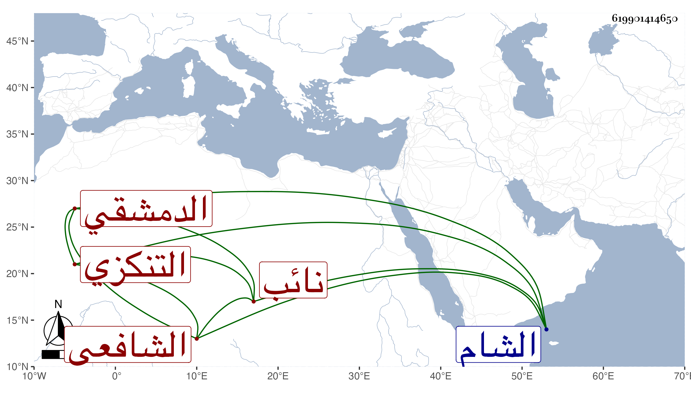

0902Sakhawi.DawLamic.ITO20230111-ara1.EIS1600.619901414650
Biography ID: 619901414650
707
محمد بن طيبغا ناصر الدين التنكزي نسبة لتنكز نائب الشام لكون أبيه كان من مماليكه الدمشقي الشافعي . ولد في رمضان سنة إحدى أو اثنتين وستين وسبعمائة ، وحفظ الحاوي واشتغل ولازم الشهاب بن الجباب مدة وهو بزي الجند ثم بعد اللنك صار يقرأ البخاري ويتكلم حين القراءة على بعض الأحاديث وانقطع عند المصلى فتردد إليه الناس وكان يستحضر كثيرا من الفقه والحديث والتفسير إلا أنه عريض الدعوى جدا مع كونه متوسطا وكان يغلظ للترك وغيرهم وربما آذاه بعضهم . مات في رمضان سنة تسع عشرة . ذكره شيخنا في إنبائه .
